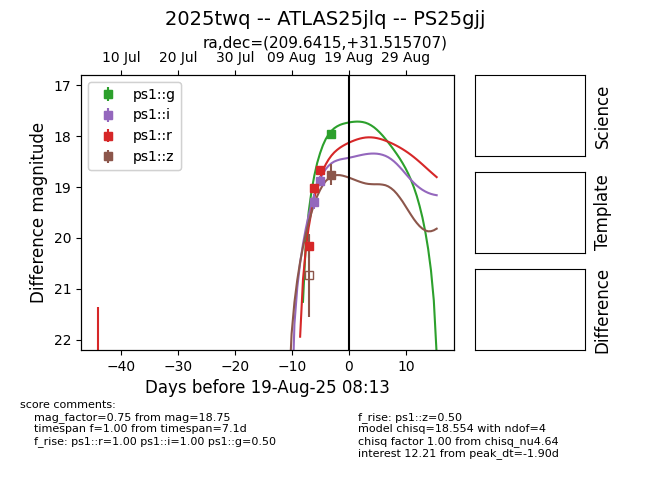

Target 2025twq at 2025-08-26 13:57, see:
TNS: wis-tns.org/object/2025twq
YSE: ziggy.ucolick.org/yse/transient_detail/2025twq
alt names
2025twq (yse,tns)
ATLAS25jlq (atlas)
PS25gjj (panstarrs)
coordinates:
equatorial (ra, dec) = (209.6415,+31.51571)
galactic (l, b) = (53.6415,+74.74317)
photometry
last atlaso=18.03, ps1::g=17.71, ps1::i=18.24, ps1::r=18.67, ps1::z=18.75
2 atlaso, 2 ps1::g, 3 ps1::i, 3 ps1::r, 1 ps1::z detections
